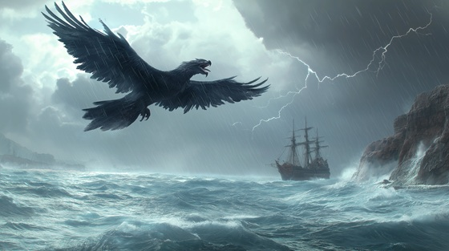

"Roc’s Winged Fury" depicts the terrifying encounter of Sinbad with the legendary Roc, a colossal bird whose wings darken the skies and whose claws strike like lightning. The song channels the sheer awe and fear of facing a creature that defies all mortal understanding. Through relentless rhythm and soaring melodies, this track evokes the epic struggle between man and mythic power, highlighting Sinbad’s courage and resourcefulness.
Roc’s Winged Fury
Shadows loom above the endless sea,
A winged terror descends on me.
Feathers like blades, eyes like fire,
The sky itself burns with its ire.
Mountains tremble where it takes flight,
A force of fury, death in sight.
The wind screams loud, the heavens bend,
A monstrous power I must contend.
Roc’s winged fury, the storm takes wing,
Chaos above me, a deathly sting.
Talons like thunder, wings of night,
I fight the terror in blinding light.
Claws rend the air with cruel delight,
A shadow cast across the fight.
The ship rocks violently on the waves,
The fury above spares none but braves.
A cry of courage, a heart untamed,
Through death and storm, my will proclaimed.
Feathers rain like burning steel,
The giant’s wrath I must not feel.
Roc’s winged fury, the storm takes wing,
Chaos above me, a deathly sting.
Talons like thunder, wings of night,
I fight the terror in blinding light.
Sky and sea collide in rage,
I am a pawn on this deadly stage.
But hope persists, and courage flies,
Even when darkness fills the skies.
A single strike, the beast recoils,
Victory won through perilous toils.
Wings of fury, claws of doom,
Lightning flashes, skies in gloom.
No mortal strength could face this beast,
Yet I endure, I am released.
Roc’s winged fury, the storm takes wing,
Chaos above me, a deathly sting.
Talons like thunder, wings of night,
I fight the terror in blinding light.
The Roc retreats to shadowed height,
The sea calms under fading light.
Sinbad sails on, his courage true,
The winged fury’s tale now through.